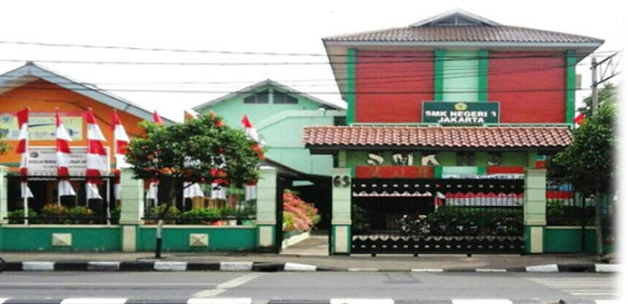

Komitmen kami untuk mewujudkan pendidikan berkualitas yang berkarakter, kompeten, dan siap menghadapi dunia kerja.

Nama Sekolah
SMK Negeri 3 Jakarta
Nama Sekolah Lama
SMEA 2 Jakarta
NPSN
20100154
Jenjang
SMK
Status Sekolah
Negeri
Akreditasi
A
Jumlah Rombel
18
Jumlah Siswa
587
Jumlah Guru
38
Jumlah Tata Usaha
8
Jl. Garuda No.63, Kemayoran, Jakarta Pusat
(021) 4242622
smknegeri3jkt@gmail.com
Menjadi lembaga pendidikan BERPRESTASI
”Membentuk karakter warga sekolah menjadi insan yang beriman, bertaqwa, dan berakhlak mulia.
Menyelaraskan tuntutan sesuai dengan kebutuhan industri dan dunia kerja.
Meningkatkan profesionalitas guru dan manajemen sekolah.
Mewujudkan iklim belajar yang kondusif dan berbasis teknologi informasi.
Meningkatkan kompetensi pendidik, tenaga kependidikan dan peserta didik sesuai bidang keahlian.
Meningkatkan keterampilan dan mengembangkan jiwa wirausaha.
Meningkatkan pelayanan kepada masyarakat dan instansi terkait.
Meningkatkan kerja sama dengan industri dan dunia kerja.
Klik pada setiap misi untuk melihat tujuan, sasaran, dan indikator keberhasilan lainnya
Misi 1 - Terbentuknya karakter warga sekolah menjadi insan yang beriman, bertaqwa, dan berakhlak mulia.
Misi 2 - Meningkatkan keterserapan lulusan dan Terciptanya link & match sekolah dengan industri dan dunia kerja.
Misi 3 - Terwujudnya kinerja tenaga pendidik dan tenaga kependidikan yang berkualitas.
Misi 4 - Terciptanya lingkungan sekolah bersih, hijau, sehat, sejuk, aman dan nyaman dengan berbasis teknologi informasi.
Misi 5 - Terwujudnya kompetensi pendidik, tenaga kependidikan dan peserta didik sesuai bidang keahlian.
Misi 6 - Terbentuknya warga sekolah yang memiliki jiwa wirausaha agar mampu menghadapi persaingan global sasaran.
Misi 7 - Tercapainya pelayanan kepada masyarakat dan instansi terkait.
Misi 8 - Tercapainya kerja sama dengan industri dan dunia kerja.